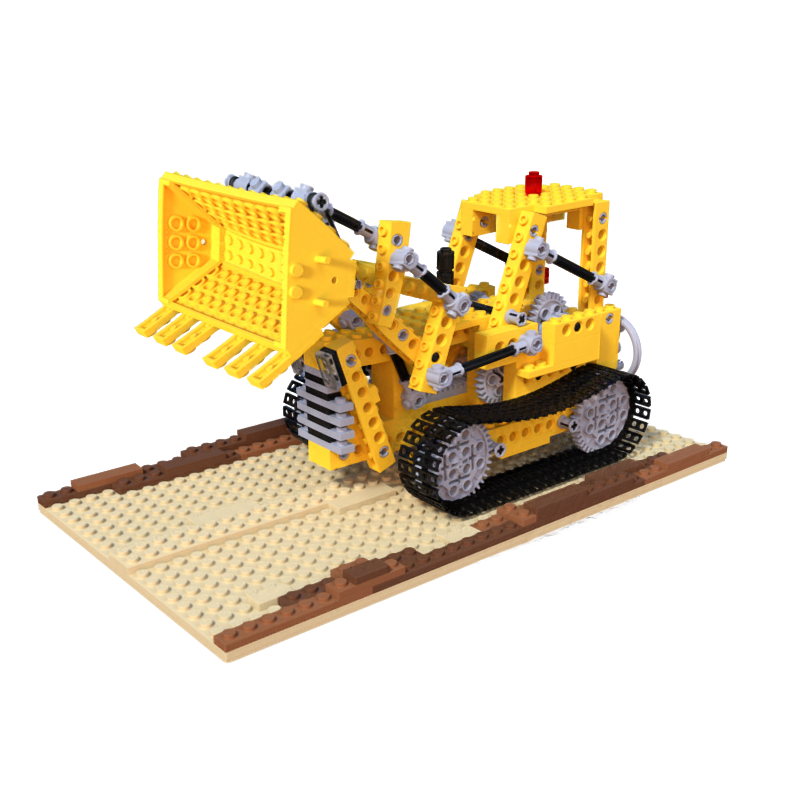

Animation
Cage interpolation
We can animate the scene by interpolating the original cage and the deformed cage. Use the slider here to linearly interpolate between the original scene and the deformed scene.
Original
Loading...

Deformed
Original
Loading...

Deformed
Cage movement
Using our cage-based approach, we can also manually create a simple cage to move the objects.
Concurrent works
Please also check out NeRF-Editing. They introduce a similar idea of mesh-based deformation for geometry editing of NeRF, which takes extracted fine mesh as an interface.